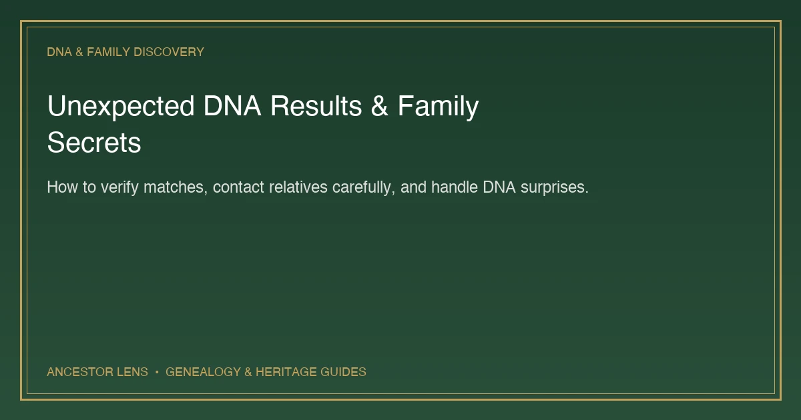
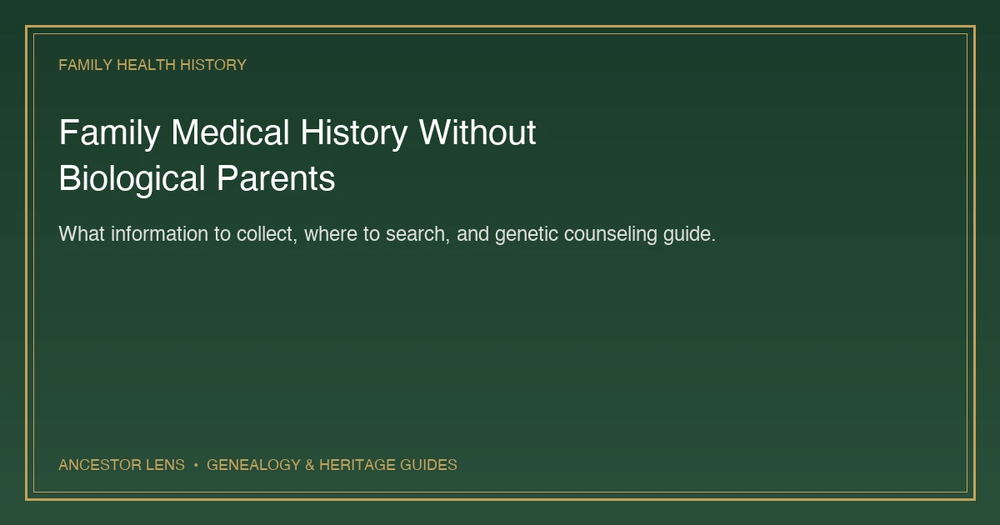
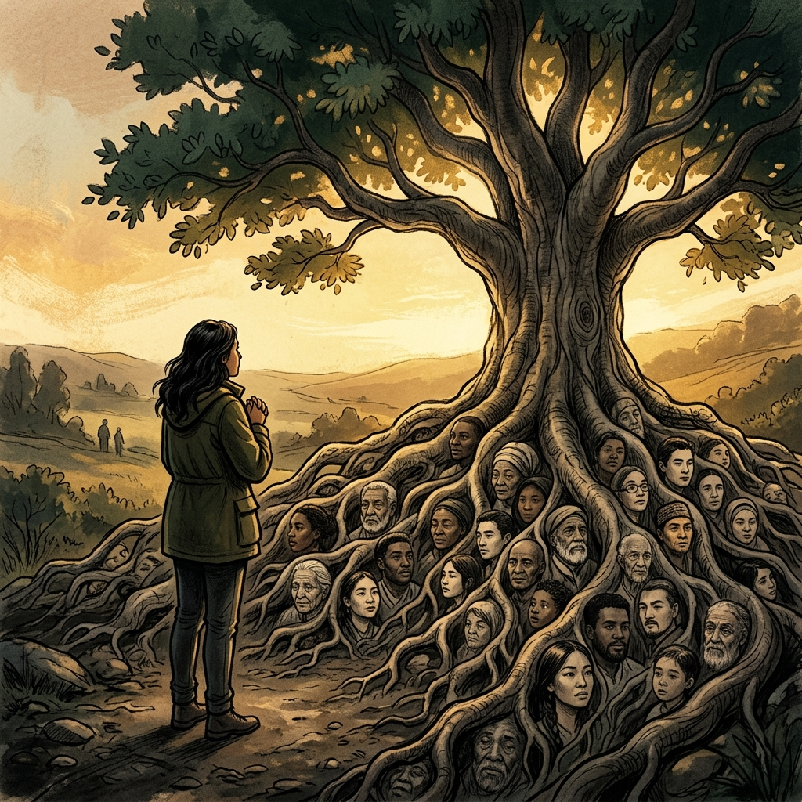
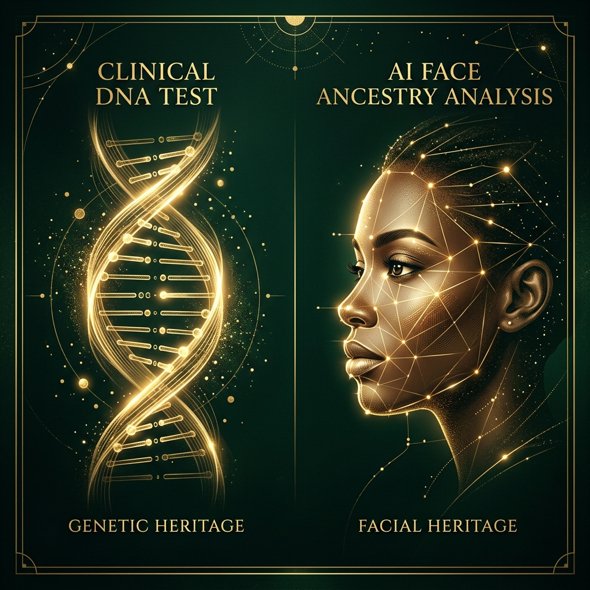
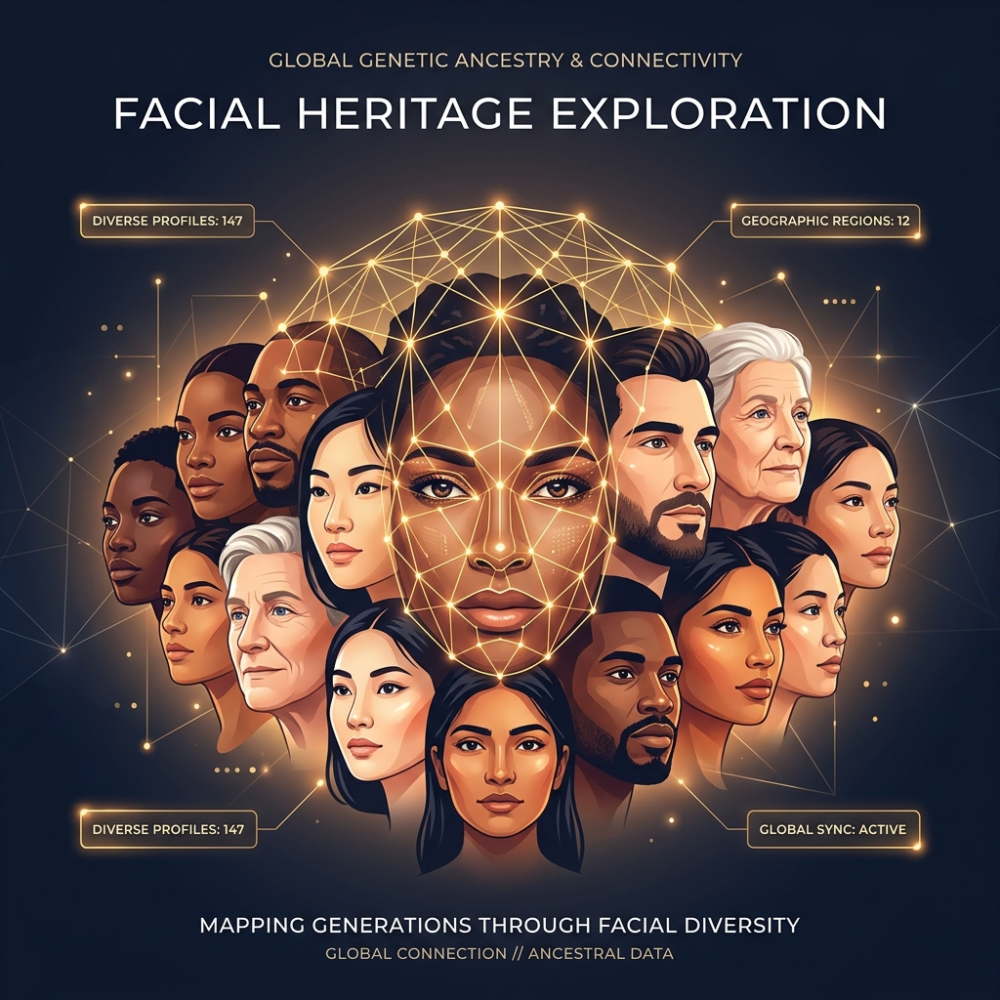

Insights & Heritage
Explore the stories, technology, and science behind your ancestral journey.
Why Do Ancestry DNA Results Differ Between Companies?
Different DNA testing companies can give the same person different ancestry percentages. Learn why results vary and how to understand what each estimate really means.
How to Build a Family Tree From Scratch: A Beginner's Guide
Start building your family tree with information you already have. This step-by-step guide explains how to find records, verify relationships, and organize your research.
How to Find a Biological Parent Using DNA Matches
DNA matches can help identify an unknown biological parent, even when the parent has not tested. Learn how to group matches, build research trees, and verify the evidence.
How to Understand DNA Matches: A Beginner’s Guide
Confused by DNA matches? Learn what match percentages mean, how to identify the maternal or paternal side, group relatives, and build a useful family tree.

Unexpected DNA Results and Family Secrets: What to Do
Found an unknown parent, half-sibling, or family secret through DNA? Learn how to verify the result, contact relatives carefully, and protect everyone involved.

How to Find Family Medical History Without Biological Parents
Do not know your biological family’s medical history? Learn what information to collect, where to search, what to tell your doctor, and when to consider genetic counseling.
Historical Figure Look-Alike: Find Your Historical Twin With AI
Which famous person from history looks like you? Discover how AI historical twin technology analyzes facial similarities and connects modern faces with remarkable figures from the past.
What Did My Ancestors Look Like? Create an Ancient Family Portrait With AI
What might your family have looked like centuries ago? Learn how AI ancestor generators create imagined historical family portraits inspired by your appearance and heritage profile.
How to Trace Your Ancestry Without a DNA Test: 12 Practical Ways
You do not need to submit DNA to begin exploring your roots. Use these 12 practical methods to research family history, identify places of origin, and organize ancestral evidence.
How Accurate Are AI Ethnicity Tests? What Your Result Really Means
How accurate is an AI ethnicity test from a photo? Learn what face ancestry apps can estimate, their limitations, and how to interpret your result.

Best Photo for an AI Ancestry Test: 12 Tips for a Clearer Result
Learn how to take the best photo for an AI ancestry or ethnicity test. Follow these selfie tips for clearer and more consistent face analysis results.
Best Ancestry Apps Without a DNA Test: Which Type Is Right for You?
Looking for an ancestry app without a DNA test? Compare AI face analysis, family-tree, surname, records, and historical look-alike apps.
Why Do AI Ancestry Results Change With Different Photos?
Discover why two photos of the same person can produce different AI ancestry results and how to get a more consistent visual analysis.
Why Do Siblings Look Different With the Same Parents?
Explore how siblings inherit different combinations of family features and why one child may resemble a parent, grandparent, or distant relative.
How to Research Your Family History: A Beginner’s Guide
Turn ancestry curiosity into real family research with a practical step-by-step guide to relatives, records, photographs, archives, and DNA.
Why Are We So Curious About Our Ancestry?
The psychology behind wanting to know your roots and the deep human need for belonging.

DNA Test vs AI Ancestry Analysis: What’s the Difference?
Understanding the core differences between lab tests and instant AI exploration.

How Your Ancestry Shapes Who You Are
Discover how your heritage influences your personality and traits even if you don't realize it.
Can AI Guess Your Ethnicity From a Photo?
Learn how AI can estimate your ethnicity from a photo and how it works.

What Is AI Face Analysis and How Does It Work?
Discover how AI face analysis works and what it reveals about your identity.
What Is My Ancestry? How to Discover Your Origins Today
Explore different ways to discover your origins, from DNA tests to AI tools.
Is AI Ancestry Safe? What Happens to Your Photo
Learn how your photo is processed and why privacy matters when using AI tools.

Why Are We So Curious About Our Roots?
Discover the psychology behind our curiosity about ancestry and identity.

How to Find Your Heritage Without a DNA Test
Learn how to explore your heritage using AI tools and family history.
What Does Your Face Say About Your Ancestry?
Discover your possible roots and heritage instantly using advanced AI face analysis.

AI Ancestry Test vs DNA Test: What’s the Difference?
Compare visual face analysis vs genetic DNA kits to discover your roots instantly.
Why AI Ancestry Results Are Going Viral on TikTok
Explore the social and psychological dynamics behind the explosive internet trend.
Can AI Predict Your Ancestry From a Photo?
Learn how AI ancestry analysis works, what it can reveal from a photo, and how tools like Ancestor Lens help users explore their heritage instantly.
Ancestry Without a DNA Test: Is It Really Possible?
Discover how to explore your ancestry without a DNA test using family records, genealogy research, and AI-powered ancestry analysis.
What Nationality Do I Look Like? The Science Behind First Impressions
Ever wondered what nationality you look like? Learn how facial features influence perception and how AI can help explore your ancestry.
What Ethnicity Do I Look Like? Try an AI Face Heritage Test
Wondering what ethnicity you look like? Discover how AI face analysis reveals heritage clues and ethnic appearance patterns in a fun, visual way.

What Nationality Do I Look Like? AI Face Nationality Guess App
Try an AI face nationality guess and discover which countries your appearance may resemble. Perfect for TikTok and Instagram sharing.

AI Face Ethnicity Test: Discover Your Face Heritage with AI
Try an AI face ethnicity test to explore what ancestry, ethnicity, or heritage patterns your face may resemble. Upload a selfie and get your result instantly.

What Country Do My Facial Features Come From?
Wondering what country your facial features come from? Learn how AI face heritage analysis explores visual ancestry clues, regional traits, and mixed roots from a selfie.

Historical Twin AI App: Find Your Past Life Look-Alike
Looking for a historical twin AI app? Discover how AI can match your face with past-life inspired looks, ancient ancestry vibes, and historical look-alikes from a selfie.
Ancestor Face App: Trace Family Heritage from a Photo
Looking for an ancestor face app? Discover how AI face analysis reveals family heritage patterns, parental traits inheritance, and ancestry clues from your selfie.
Start Your Ancestry Discovery Today
Join thousands of others exploring their heritage visually. Available on iOS and Android. No DNA required.